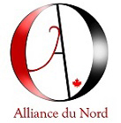

Alliance of the North
Only runs candidates in Ontario and Quebec. Unclear what their policies are, but an election platform is forthcoming.
Party website
Here’s a listing of the parties you might see on your ballot on October 21, 2019
Only runs candidates in Ontario and Quebec. Unclear what their policies are, but an election platform is forthcoming.
Relatively new party that champions animal rights and environmental issues. With few members and candidates to run, their primary goal isn’t to get elected but to hold the government to account. Will support office-seekers who share their views.
Only Quebec citizens can vote for this party as they represent the interests of the province, chiefly those wishing to secede from Canada.
Pro-Christian group seeking to govern through Judeo-Christian principles. Among their policies are religious freedom; reconciliation with the Indigenous community; shrinking or privatizing the CBC; and scrapping progressive income taxes in favour of a “fair tax” on the purchase of finished products.
Represents the county’s communists or “the working class and all the people exploited and oppressed by big business. We stand alongside Indigenous people, women, students, social and environmental activists, seniors, farmers, and many others engaged in progressive struggle across Canada.”
Has a publication called the “People’s voice newspaper”.
One of the two oldest parties in Canada. Currently serving as Official Opposition in parliament. Traditional policies include fiscal responsibility, emphasis on the individual and a strong free market economy. Is centre-right or right on the political spectrum. So far, has committed to eliminating the GST on home heating and energy bills and increasing the Canada Health Transfer and Canada Social Transfer.
The voice of the nation’s environmentalists. Has no firm position on the political spectrum. Aside from environmental matters is concerned about small businesses, student issues, democratic reform and health care.
Canada’s governing party. One of the country’s two oldest political factions. Centre to centre-left on the political spectrum. Recognizes the individual, their freedoms and responsibility but also encourages equal opportunity for everyone. Is also pro-education and finding balance in fiscal priorities. Platform forthcoming.
Promotes libertarian ideals of small-scale government and personal freedom. Their policies include an overhaul of the federal income tax system with a 15 per cent “flat-tax”, repealing Bill C-51 and re-evaluating all victimless crimes.
Raison d’être was primarily for legalization of marijuana. Current platform unclear.
Not sure how they’re different from the communists . . .
An “anti-globalist”, “pro-Canadian” political group that wants to put the needs of Canadians first above all else. Campaign includes drastic immigration and foreign policy reform; citizen-led governance; curtailing bureaucracy and returning to the 1934 Bank of Canada Act, including the 1938 Amendment and their own.
The third biggest political party in Canada. Left on the political spectrum. Sometimes centre-left. Has roots in activism and social justice. Like the Liberals, emphasizes multiculturalism, but also recognizes the role of government in providing public services and making sure society’s wealthiest members help everyone else. Wants to introduce universal pharmacare, lower cellular and internet rates and fight climate change.
Canada's joke party. Runs candidates on a lark and lampoons the democratic process.
Created by former Conservative MP and former leadership candidate Maxime Bernier in 2018. Right-wing. Values include lower taxes, including scraping the federal carbon tax; ending all corporate welfare; reducing the size of government; privatizing Canada Post; “Kicking out the CRTC from the telecom industry”; reforming firearms laws; reducing immigration and getting rid of supply chain management on staple foods.
A political party made up of the remnants of the former Progressive Conservative party of Canada which was dissolved following the merger with the Canadian Alliance in 2003 to form the Conservative Party of Canada. Wants to preserve some parts of Canadian society and improve on others. Concerned about small business, education, one-tier healthcare and increased fiscal responsibility.